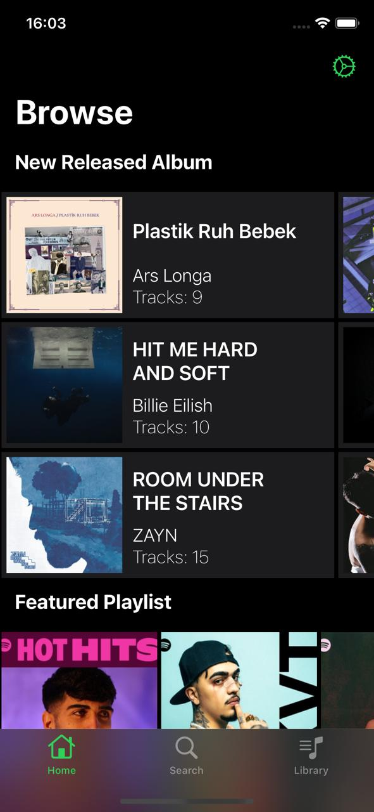
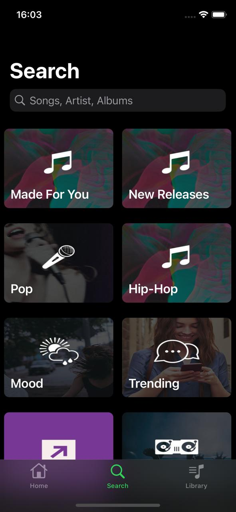
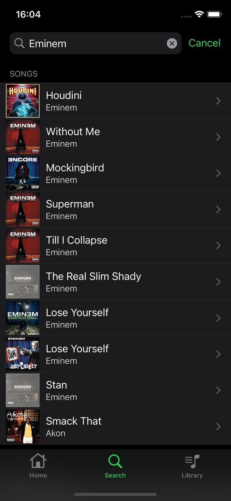
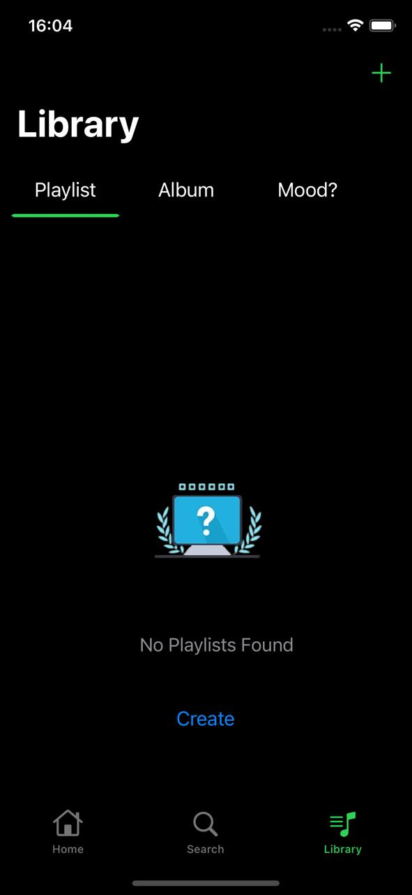
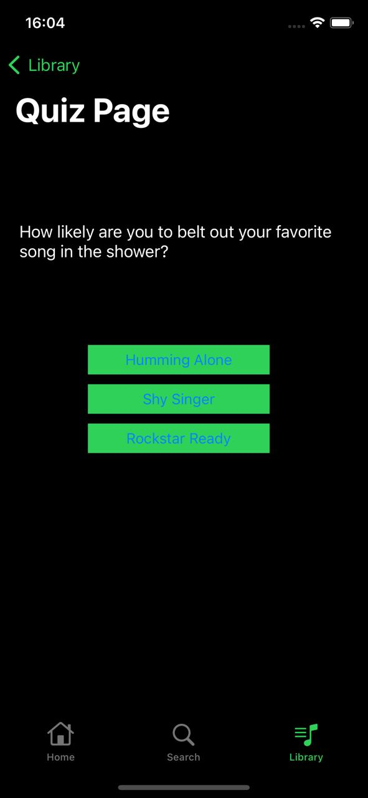
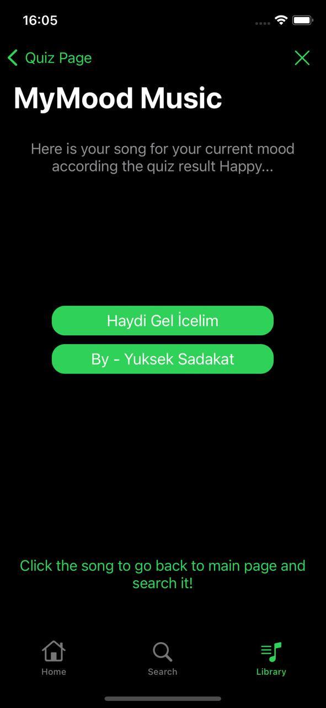
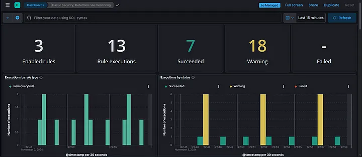

☰
Portfolio | Kaan Arda Uzun's Website
Portfolio
Check out some of my work:
- Spotify Clone Project
- Elastic SIEM Lab Guide
To see the rest of my projects, check out my GitHub.
Spotift Clone Project
Summary - iOS Clone Spotify App
- Browse and search for songs, albums, and artists
- Play and control music playback
- Create and manage playlists
- View song details and album information
- Having a quiz to learn your mood.
- Getting songs according to your quiz result.
Screenshots






Technologies Used
- Xcode
- Swift
- Firebase
- URLSession
- Cocoapods
Installation Steps
Follow these steps to get started:
- Clone the repository:
git clone https://github.com/UzunKaanA/iOS-CloneSpotifyApp.git
- Navigate to the project directory:
cd iOS-CloneSpotifyApp
- Install dependencies using CocoaPods:
pod install
- Open the project in Xcode:
open Comp.xcworkspace
Elastic SIEM Lab Guide
Summary of the work
- In the cybersecurity world, SIEM (Security Information and Event Management)
systems are critical tools that help organizations become better prepared against
security threats. SIEM collects, analyzes, and contextualizes security events.
In this guide, I will share the steps to create your own SIEM lab environment.
This setup will be a great starting point for those who want to learn the basics of
collecting and analyzing security events.

To see the rest and how to do it, check out my
Medium Page
.
Or go to my
Blog
page in this website.